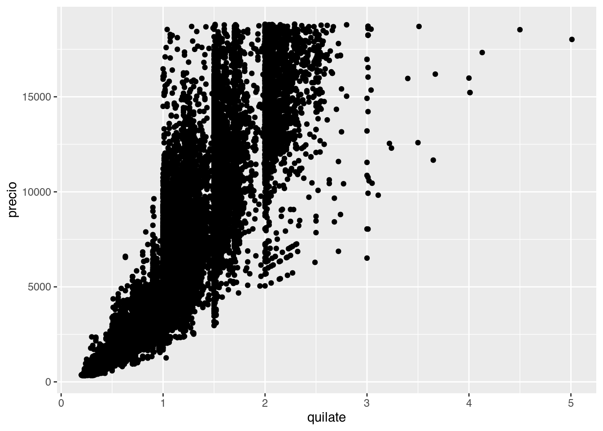

El paquete datos incluye muchas vaces de datos que se usan normalmente en ejemplos o en cursos y talleres para enseñar R. Uno de ellos es es diamantes. Veamos un resumen de este data set.
summary(diamantes)## precio quilate corte color claridad
## Min. : 326 Min. :0.2000 Regular : 1610 D: 6775 SI1 :13065
## 1st Qu.: 950 1st Qu.:0.4000 Bueno : 4906 E: 9797 VS2 :12258
## Median : 2401 Median :0.7000 Muy bueno:12082 F: 9542 SI2 : 9194
## Mean : 3933 Mean :0.7979 Premium :13791 G:11292 VS1 : 8171
## 3rd Qu.: 5324 3rd Qu.:1.0400 Ideal :21551 H: 8304 VVS2 : 5066
## Max. :18823 Max. :5.0100 I: 5422 VVS1 : 3655
## J: 2808 (Other): 2531
## profundidad tabla x y
## Min. :43.00 Min. :43.00 Min. : 0.000 Min. : 0.000
## 1st Qu.:61.00 1st Qu.:56.00 1st Qu.: 4.710 1st Qu.: 4.720
## Median :61.80 Median :57.00 Median : 5.700 Median : 5.710
## Mean :61.75 Mean :57.46 Mean : 5.731 Mean : 5.735
## 3rd Qu.:62.50 3rd Qu.:59.00 3rd Qu.: 6.540 3rd Qu.: 6.540
## Max. :79.00 Max. :95.00 Max. :10.740 Max. :58.900
##
## z
## Min. : 0.000
## 1st Qu.: 2.910
## Median : 3.530
## Mean : 3.539
## 3rd Qu.: 4.040
## Max. :31.800
## También es interesante graficar estas observaciones para ver la relación entre variables.

Si te preguntábas que hace echo = FALSE al comienzo del bloque de código, está ahí para no incluir el código de R en el archivo final pero si el plot que genera.